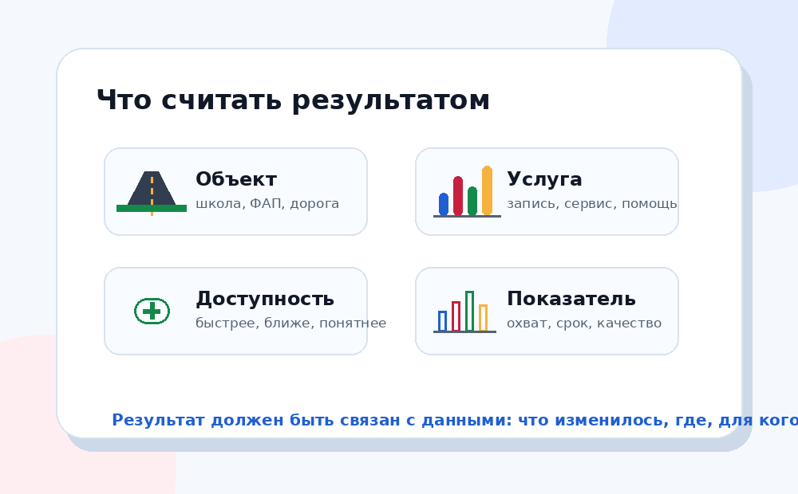

Результат национального проекта — это не только отчёт, а измеримое изменение: объект, услуга, показатель, доступность или качество среды.

Школы, больницы, дороги, общественные пространства, культурные и спортивные объекты.
можно увидетьМедицинская профилактика, цифровые сервисы, образовательные программы, меры поддержки.
можно получитьОхват, сроки, количество участников, доступность, качество среды, экономический эффект.
можно измерить| Вопрос | Зачем нужен | Пример |
|---|---|---|
| Что изменилось? | Отделяет результат от обещания | Открыт объект, запущена услуга, вырос охват |
| Кого это касается? | Показывает связь с жизнью людей | Семьи, пациенты, школьники, жители района |
| Где это проверить? | Защищает от голословности | Официальные сайты, бюджет, региональные отчёты |
| Какие ограничения? | Делает анализ честным | Не вся мера одинаково доступна во всех регионах |